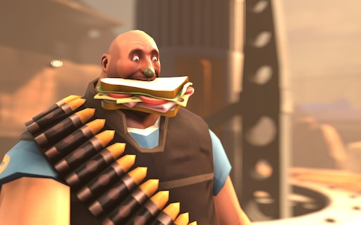

Home Page
Heavy Sandvich

Description
The Sandvich can be consumed by pressing either primary fire or taunt key (default keys: MOUSE1 and G, respectively).
When eaten, it gradually replenishes up to 300 health over a four second duration with no overheal.
While the Heavy is eating, he makes a loud munching sound and the player is forced into the third-person view.
As eating the Sandvich is considered a taunt, it cannot be consumed in instances when taunts cannot be used, such as when underwater.
Ingredients
- White bread - two slices, no more and no less. Make sure it won't eat you.
- Lettuce - one leaf, make sure it is crunchy and dry, not soggy and icky.
- Tomatoes - two slices, you can add more if you're Italian. Don't forget to season your tomatoes.
- Swiss cheese - one slice. If you don't have swiss cheese, take russian cheese and make holes with your pulem'et (minigun)
- Ham - very important, add as much as you want, but don't overpower everything else. Balance!
- Bologna - either use doktorskaya or molochanaya kolbasi. You will know which one is which when you see them.
- Green olive - Two. Put them on their toothpicks. If you don't put them on their toothpicks, it's not a sandvich, just some sandwich.
- Toothpick - Two. make sure they're long enough for your sandvich!
Cooking Steps
- Take two pieces of bread.
- Rip a leaf from lettuce. Wash it. Dry it very good.
- Slice tomatoes. Don't make them too thin or thick and don't forget to season with iodised salt and pepper (optional, depending on your spice level).
- Slice bologna and ham thinly, but however much you want.
- Assemble your sandvich - lettuce, tomato, cheese, bologna, ham.Slice in half diagonally.
- Put toothpicks and olives.
- Nom, nom, nom
Return to top